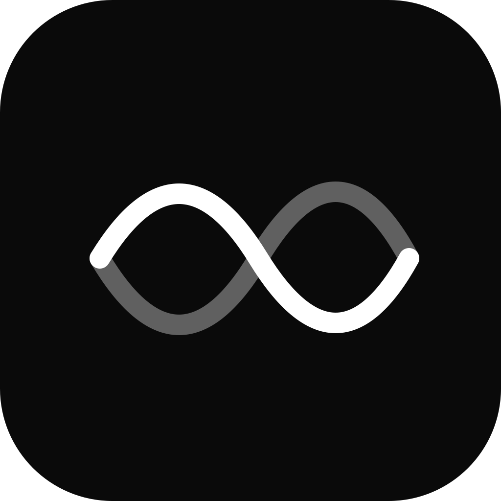

Programmable timers
Type timer 25m: focus,
every 1h x 8: water, at 14:30: standup,
or pomodoro 25/5 x 4. They survive restart, fire a
chime & toast, and run while the window is hidden.

foolscapHit one hotkey, dump a thought, compute something, start a timer, and move on. Notes auto-rotate. Math is inline. The desktop blurs through the window. Built for the moments your text editor is too much and a sticky note is too little.
Press Alt + A anywhere to summon it.
Type timer 25m: focus,
every 1h x 8: water, at 14:30: standup,
or pomodoro 25/5 x 4. They survive restart, fire a
chime & toast, and run while the window is hidden.
Live calculator with named variables, reactive recalc, units
(5 km en mi), 30+ currencies refreshed from the ECB,
and aggregates over labelled ranges (sum(*_revenue)).
Toggle once, then anything you copy from anywhere lands in the current note automatically. Recording-dot indicator while it's on. No more flipping back & forth.
Notes you don't touch for a week disappear at the next launch. Pin the ones that matter. The palette warns you before they go. Knowledge base, this is not.
Free, source-available, local-only. No account, no telemetry, no sync.
Source on GitHub under PolyForm Noncommercial 1.0.0.